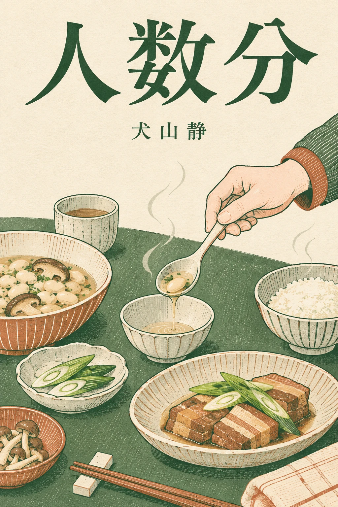

前口上
この物語を書いたわけ
私は肉を食べます。おいしいと思って食べています。
食肉の過程で、一部の動物が凄惨な扱いを受けていることを知りました。そんなことをされる必要があるのかと思いました。それでも、肉を食べたい気持ちは残っていました。どちらも自分の中にあって、うまく説明がつきませんでした。
食べないという選択があります。私が選びたいと思ったのは、肉を食べる暮らしに関わりながら、その食べ方を少しでもよくしていくことでした。どう育てられ、どう届いたものなのかを知る。作る人にも、食べる人にも無理をさせない。そうしたことを含めて、「ちゃんと食べる」を考えたくなりました。
ただ、この「ちゃんと」は、なかなか厄介です。口に出した途端、相手の皿まで気になりそうになる。せっかく作ったのだから、一口ぐらい、と言いたくもなる。伝えたかった感謝が、いつの間にか食べる人への注文になってしまいます。
子どもにも、大人にも、料理ができたうれしさや、人と食べる楽しさを感じてほしい。食材を知ることが、そういう喜びにつながってほしいと思っています。鍋のふたを開けたときの匂いも、自分で切ったねぎの形も、話してみたいことはたくさんあります。
一緒に食べて楽しかったとしても、肉を食べないと決めた人の考えは、そのままかもしれません。私はきっと、もう少し話したくなると思います。おいしかったという感想の先に、何を言ってほしいのだろう。そんな自分の勝手なところも含めて、書いてみたくなりました。
この物語には、食堂の主人と、動物を育てる人と、肉を食べない人が出てきます。みんな話したいことがあって、なかなか譲りません。そして、子どもたちが料理を作りに来ます。
読んでいる途中で、何か食べたくなったら、それもうれしいです。
犬山静
第一章から読む全八章